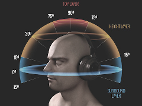
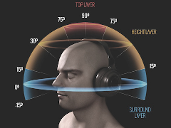

En estos días se viralizaron nuevas versiones de temas que, escuchados con auriculares, suenan de una manera muy diferente a la original. ¿Aún no escuchaste? Sorprendete
 


Se trata de una técnica surgida a principios de los años 70 en Inglaterra, que cumplía una función de darle al sonido una característica esférica.
A grandes rasgos, a partir de un complicado trabajo que tiene base matemática, se trabaja la fase del sonido que permite que el cerebro distinga de dónde viene la información.
Music Lab actualmente está trabajando en un álbum enteramente en sonido 360° con artistas argentinos y extranjeros como Proyecto Gómez Casa, Lula Bertoldi, Loli Molina, Chancha Vía Circuito, Darío Jalfin, Nahuel Bronzini y Famasloop.
Hoy por hoy trabaja no solo a nivel musical sino a lo que sonido se refiere, innovando en álbumes pero también en instalaciones sonoras en conferencias y presentaciones.